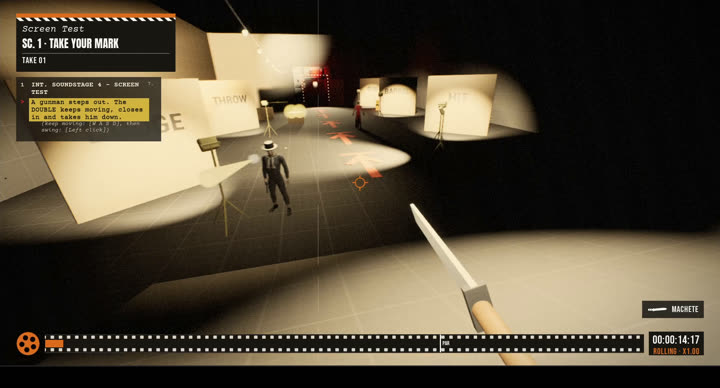
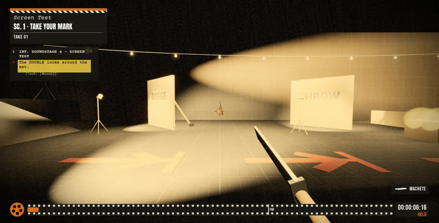
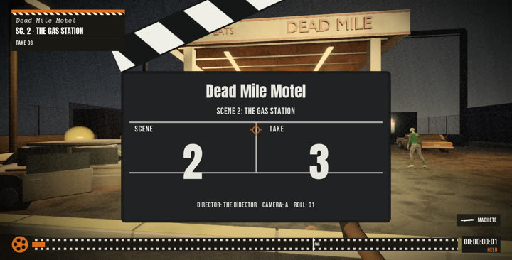
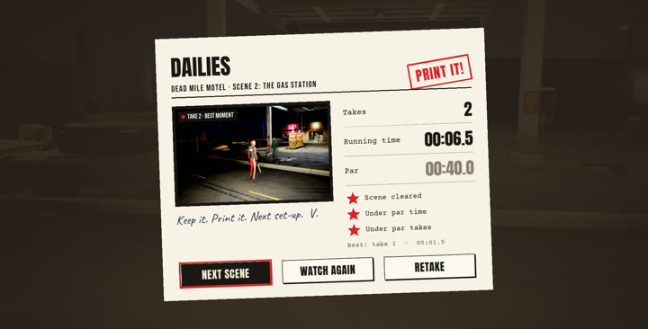
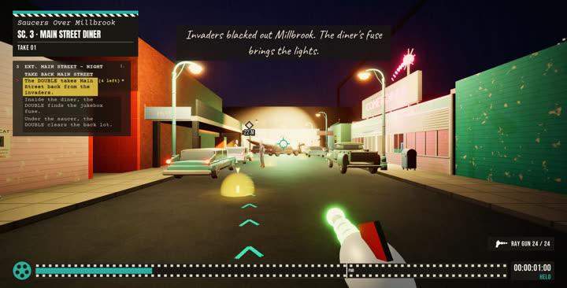

Round three: a gunman in the screen test, and a saucer that owns its kills
My longest note of the day, at 13:50, became six tasks; by 15:12 the tutorial had a noir gunman instead of a bullet-dodge drill, the saucer warned you and signed its kills, and retakes stopped adding stars (I'd scored 25 out of 24).
Day 4, Sun 15 NovHour 83
I played a22ef6dac after lunch. The note at 13:50 started with a correction: "I was mistaken the alien blaster was fine at 6, it was the ray gun i wanted halving." Then the real list:
"Its not clear that the UFO is an enemy and as it often appears mid scene you cant see it spawn in as you are too fouced, also its not clear that it killed you."
"The bullet dodge in the tutorial isnt clear, replace that with just spawning in an emeny noir agent with a gun, redo the voice lines for this aswell, light up the tutorial room better, dont make the player redo the whole tutorial if the Noir agent gets them."
"Last run i got 25/24 because I retook a couple scenes."
Plus: shorten one tutorial line to "Lights, camera, action, blood", faster zombies, all melee reach down 25%, more light on the stairs in scene 7, and a tommy gun with 16 rounds and less damage. The Director made it six tasks (T-0219 to T-0223), with one assumption recorded: "all melee range -25%" means the enemies' reach and mine.

The new screen-test station (T-0221): a noir gunman to deal with instead of bullets to dodge. Die to him and you restart at this station, not the whole tutorial.
The first film of the gunman station was near-black. world added three lights over it at 15:18, and this is the after.
A retake from the shooting schedule (T-0222) now opens on a clean slate: no 'you failed' card, no replay of an old death.
The Dailies card after a retake. The scene's stars are counted once, so the end total can't pass 24 any more.
RAY GUN 24/24, half what it was. The alien blaster is back at 6, and the tommy gun has 16.
Three C++ branches were with the engine by 14:14. Green at 14:48 on d720ffd5e, and the journey passed 27 of 27 from the zip at 15:12. On film: ammo, the saucer's warning line, arrow and ring, "CUT by saucer", skipping on WATCH AGAIN, the clean retake and stars counted once all passed. Two things still needed work. The gunman station was near-black (world's lights fixed it) and the fireball had shrunk after a VFX bake (gameplay-3 made it bigger, green at 15:40).
None of these showed up in the crew's reviews. The reviewers check the film against a definition of done, and "can a player tell the saucer is trying to kill them" was never written into one. It took someone playing to see it.